library(tidyverse)
library(knitr)
library(simmer)
library(simmer.bricks)
library(simmer.plot)R7: Simmer 2
14:540:384: Simulation Models in IE (Spring 2025)
Questions
Review
- Demonstrated why we do simulations
- Discussed relationships between data, distributions, and simulations
- Simulated processes in batches, using control loops, and with
simmer - Manipulated data and generated plots with
tidyverse
1 Learning Objectives
- Use
simmerto model a more complex process - Replicate model for numerous simulations
- Wrap our model and replication into a function
2 Problem
Due to Real ID requirements, the NJ MVC has seen an overwhelming increase in appointments and are seeking to optimize their process flow. All customers must have an appointment and currently the MVC is booked through the end of May. The Edison MVC is hoping to release an additional 50 appointments per day by increasing their efficiency. The current process flow is:
- Check-in desk: customers confirm their appointment with a clerk and recieve paperwork to fill out
- Complete Paperwork: A simple form which must be filled out correctly or else customers are turned back
- Document Verification: A clerk collects and looks over the documents to ensure Real ID compliance
- Photo Station: A clerk reviews documents again and enters data into the computer prior to taking a photo. The customer then approves the photo, signs a few documents, and pays the $11 fee.
- Are there improvements that could be made through reallocating existing human resources or requisitioning additional equipment?
- What is the typical amount of time a customer spends at the MVC?
- How much of that time is spent waiting (i.e. not actively at one of the stations)
2.1 Additional Details
- An intern has observed the process over a number of days
- They have used
fitdistrplusto fit several distributions and used BIC to select the best fit distributions for the various processes which are detailed below in Table 1.
| Process | Number of Resources | Distribution | Parameters | |
|---|---|---|---|---|
| Arrival | NA | Exponential | \(\hat\lambda = 2\ minutes\) | |
| Check-in | 1 | Normal | \(\hat\mu = 1.5\ minute\), \(\hat\sigma = 5\ seconds\) | |
| Form-completion | 12 | Normal | \(\hat\mu = 2.5\ minute\), \(\hat\sigma = 30\ seconds\) | |
| Document Check | 4 | LogNormal | \(\hat\mu_L = 1.75\ minute\), \(\hat\sigma_L = 30\ seconds\) | |
| Photo Station | 3 | Weibull | \(\hat{k} = 2.3\), \(\hat\lambda = 5.1\ minutes\) |
The office runs in the morning from 8:00AM to 4:00 PM with staff shifts and lunches staggered to maintain essentially the same resources throughout the day.
note: the “hat” such as \(\hat\mu\) indicates this is the estimated paramter, \(\mu\). This is what the intern obtained from the fitting the distributions.
2.2 Model Approach
- Draw a process diagram
- Create a customer trajectory in
simmer - Add resources
- run simulation and examine results
3 Solution
3.1 Loading Packages
3.2 Defining Model Parameters
simulation_time <- 60 * (16 - 8) # closing minus opening minus lunch
cust_arrival <- function(n=1) {
rexp(n=n, rate = 1/2)
}
check_in <- function(n=1) {
rnorm(n=n, mean = 1.5, sd = 5/60)
}
n_check_in_clerks <- 1
forms <- function(n=1) {
rnorm(n=n, mean = 2.5, sd = 30/60)
}
n_tables <- 12
form_check <- function(n=1) {
rlnorm(n=n, meanlog = 1.75, sdlog = 30/60)
}
n_form_clerk <- 4
photo_station <- function(n=1) {
rweibull(n = n, 2.3, scale = 5.1)
}
n_photo_clerks <- 33.3 Define Simmer Model
cust_traj <- trajectory("customer") |>
seize("check-in-clerk", 1) |>
timeout(function() check_in(1)) |>
release("check-in-clerk") |>
# this is from simmer.bricks and is equivalent to above
visit("table", forms, 1) |>
# I can even omit the "1" because that is the default value
visit("form-clerk", form_check) |>
visit("photo-clerk", photo_station)mvc <- simmer("MVC") |>
add_resource("check-in-clerk", n_check_in_clerks) |>
add_resource("table", n_tables) |>
add_resource("form-clerk", n_form_clerk) |>
add_resource("photo-clerk", n_photo_clerks) |>
add_generator("customer", cust_traj, cust_arrival)3.4 Run The Simulation
Below we simulate this system for one day
mvc |> run(simulation_time)simmer environment: MVC | now: 480 | next: 480.230128409925
{ Monitor: in memory }
{ Resource: check-in-clerk | monitored: TRUE | server status: 1(1) | queue status: 2(Inf) }
{ Resource: table | monitored: TRUE | server status: 1(12) | queue status: 0(Inf) }
{ Resource: form-clerk | monitored: TRUE | server status: 4(4) | queue status: 0(Inf) }
{ Resource: photo-clerk | monitored: TRUE | server status: 1(3) | queue status: 0(Inf) }
{ Source: customer | monitored: 1 | n_generated: 220 }3.5 Examining Results
And we can start to examine the results as before:
resources <- get_mon_resources(mvc)
plot(resources, metric="usage")
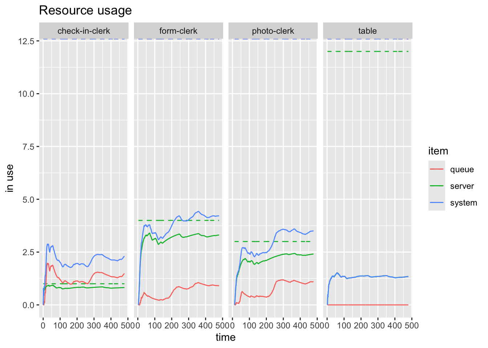
resources <- get_mon_resources(mvc)
plot(resources, metric="usage", steps = TRUE)
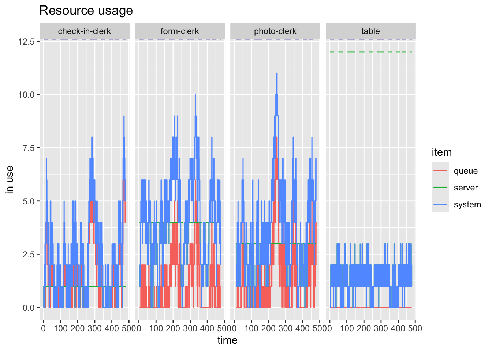
Figure 1 and Figure 2 show the difference bewteen the average over time and the instantaneous states of the system.
And we can look at some customer perspective things as well such as shown in Figure 3
arrivals <- get_mon_arrivals(mvc)
plot(arrivals, metric = "flow_time")`geom_smooth()` using method = 'loess' and formula = 'y ~ x'
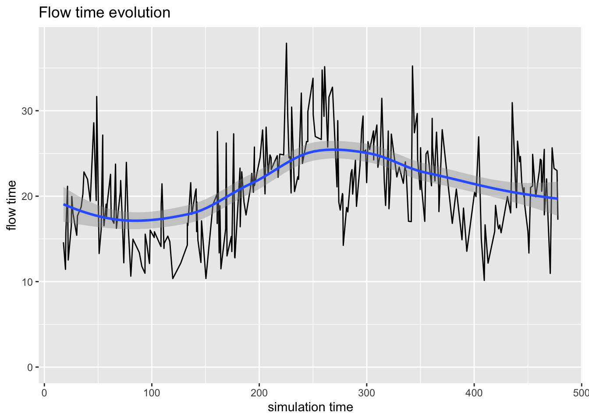
3.6 Replications
But this is a single simulation for a single day. What can we really say about the process?
We will be better off simulating many days to get a bettery feel for how things typically process here. This is achieved this by using lapply to the simmer model. When we extract the monitored resources and arrivals (with get_mon_resources and get_mon_arrivals, respectively), the tables have kept track of the replication number for us.
mvcs <- lapply(1:10, function(i) {
cust_traj <- trajectory("customer") |>
visit("check-in-clerk", check_in) |>
visit("table", forms) |>
visit("form-clerk", form_check) |>
visit("photo-clerk", photo_station)
mvc <- simmer("MVC") |>
add_resource("check-in-clerk", n_check_in_clerks) |>
add_resource("table", n_tables) |>
add_resource("form-clerk", n_form_clerk) |>
add_resource("photo-clerk", n_photo_clerks) |>
add_generator("customer", cust_traj, cust_arrival) |>
run(simulation_time)
})
mvcs_arrivals <- get_mon_arrivals(mvcs)
mvcs_resources <- get_mon_resources(mvcs)And now we can plot the results of the numerous simulations at once.
plot(mvcs_resources, "photo-clerk", metric = "usage")
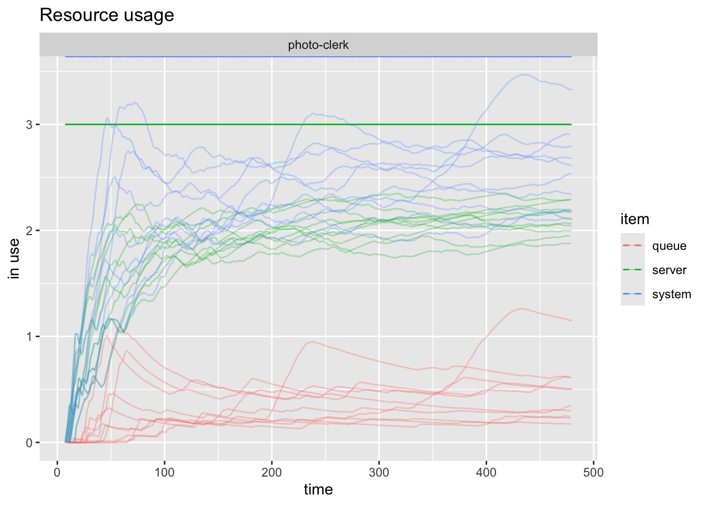
Now we can see what seems to be random across the scenarios and what the trends seems to be. It’s a little difficult to separate the different series, so we can plot just one of them with items =. This is captured by Figure 5 below:
plot(mvcs_resources, "photo-clerk", metric = "usage", items = "queue")
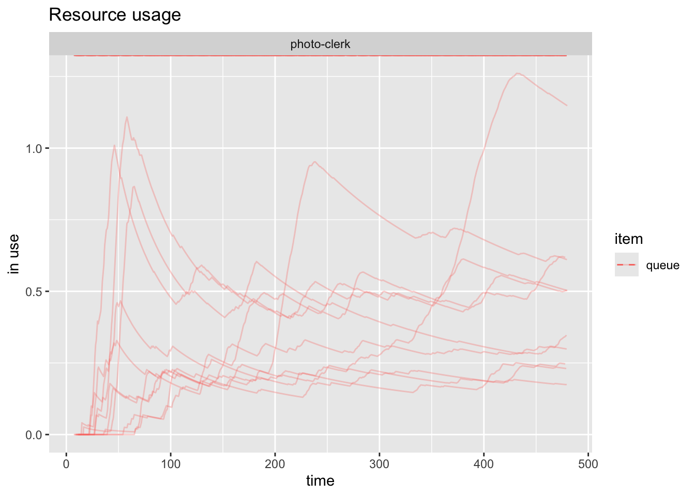
And if we wanted to examine all the queues we can achieve that as shown in Figure 6.
plot(mvcs_resources, metric = "usage", items = "queue")
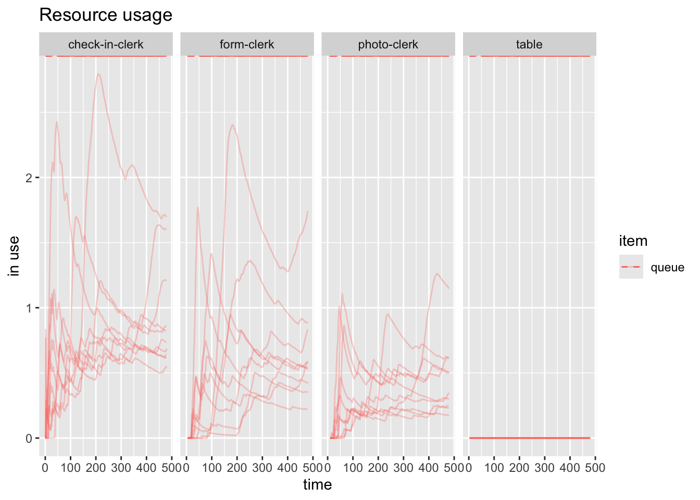
Note
I am getting the figure captions and references by specifying a fig-cap in the code chunk and a label that starts with fig-. I then reference that fig- with @fig- in the body of the document and it links it automatically as shown below:
And if we wanted to examine all the queues we can achieve
that as shown in @fig-all-resource-queeus.#| output: true
#| fig-cap: "All resource queues"
#| label: fig-all-resource-queues
plot(mvcs_resources, metric = "usage", items = "queue")4 Wrapping this all into a function
Additionally, what if we want to go back and tweak some inputs? I don’t want to type all that again at each spot. So instead I’ll create a function which takes our key model parameters as inputs, and outputs the model. I can then run it once or many times as above. I could create a new model manually each time, or I could have a table which stores the various parameters and iterate over that or have some kind of scenario generator and iterate through that. How much automation we use is dictated by the problems we’re trying to solve.
4.1 Simulation creater function
create_simmer_model <- function(
n_check_in_clerks, check_in_time,
n_tables, form_completion_time,
n_form_clerk, form_check_time,
n_photo_clerks, photo_time,
cust_arrival, name = "") {
# Define the customer trajectory
cust_traj <- trajectory("customer") |>
visit("check-in-clerk", check_in_time) |>
visit("table", form_completion_time) |>
visit("form-clerk", form_check_time) |>
visit("photo-clerk", photo_time)
# Create and return the simmer model (not run yet)
simmer(name) |>
add_resource("check-in-clerk", n_check_in_clerks) |>
add_resource("table", n_tables) |>
add_resource("form-clerk", n_form_clerk) |>
add_resource("photo-clerk", n_photo_clerks) |>
add_generator("customer", cust_traj, cust_arrival)
}4.2 Replicating Simulation using Simulation Creator
mvcs <- lapply(1:25, function(i) {
sim <- create_simmer_model(
n_check_in_clerks, check_in,
n_tables, forms,
n_form_clerk, form_check,
n_photo_clerks, photo_station,
cust_arrival, name = "MVC")
sim |> run(simulation_time)
})4.3 Extract Results
Everything else works as it did before, we’ve just made everything neater.
arrivals_rep <- get_mon_arrivals(mvcs)
resources_rep <- get_mon_resources(mvcs)4.4 Arrival Plots
- Activity Time
- Waiting Time
- Flow Time
Activity Time
plot(arrivals_rep, metric = "activity_time")`geom_smooth()` using method = 'gam' and formula = 'y ~ s(x, bs = "cs")'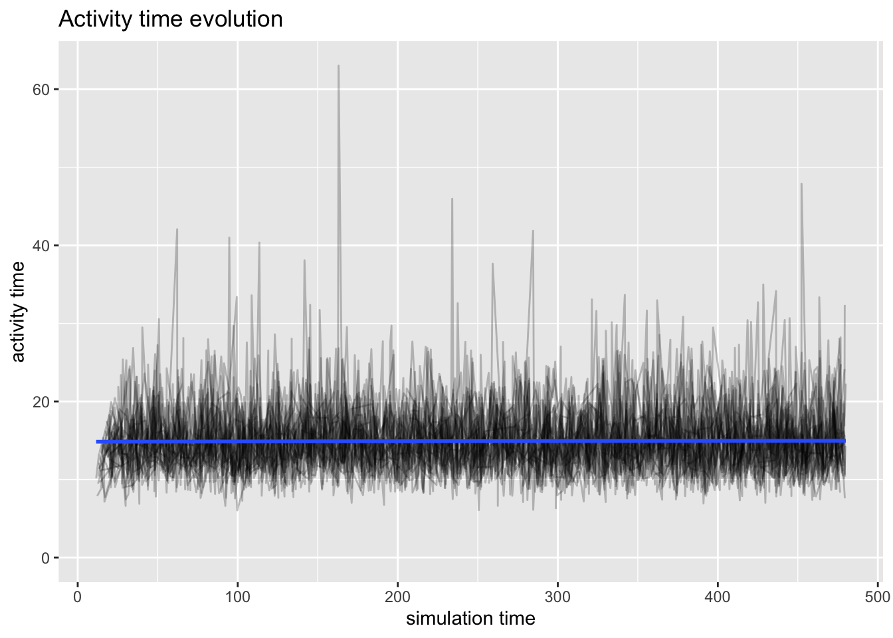
Waiting Time
plot(arrivals_rep, metric = "waiting_time")`geom_smooth()` using method = 'gam' and formula = 'y ~ s(x, bs = "cs")'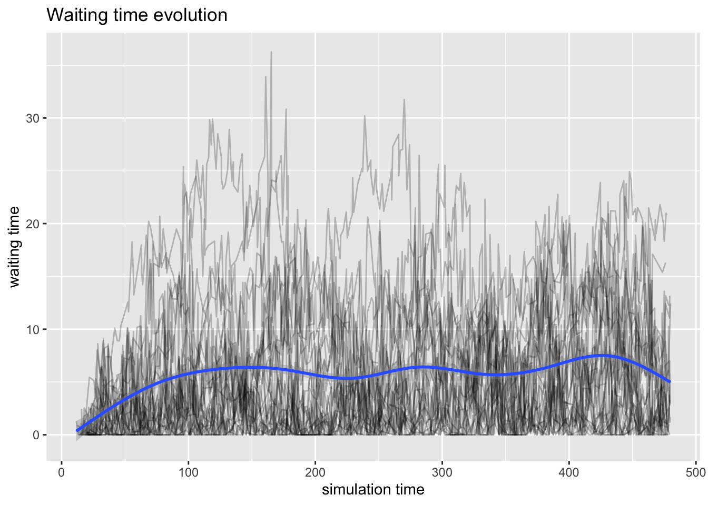
Flow Time
plot(arrivals_rep, metric = "flow_time")`geom_smooth()` using method = 'gam' and formula = 'y ~ s(x, bs = "cs")'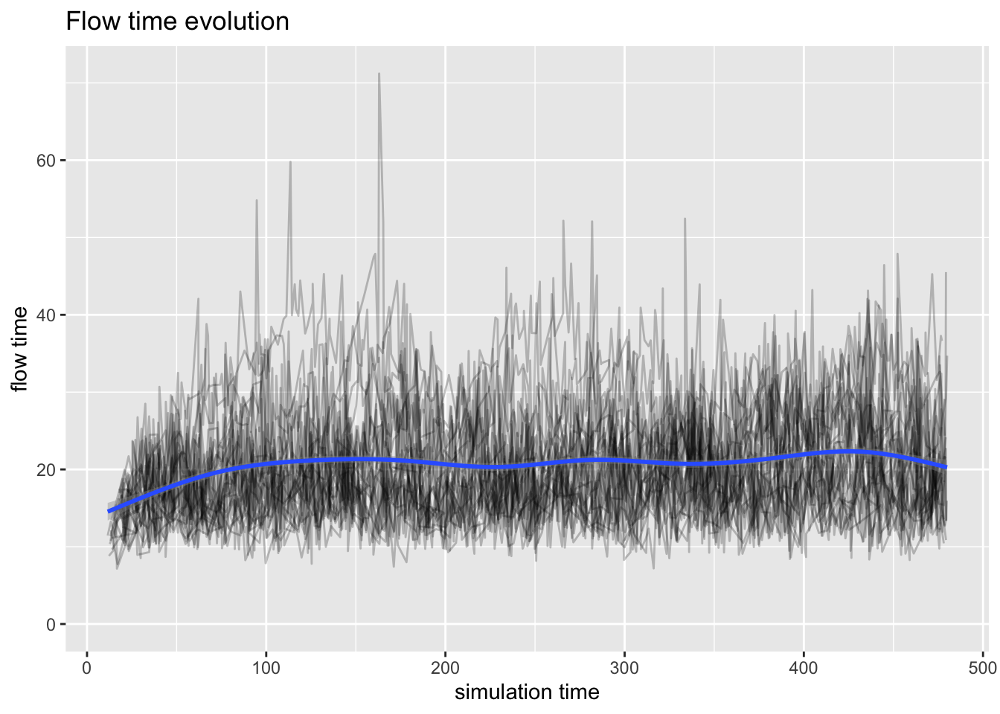
4.5 Resource Plots
- Usage
- Utilization
Usage
plot(resources_rep, metric = "usage")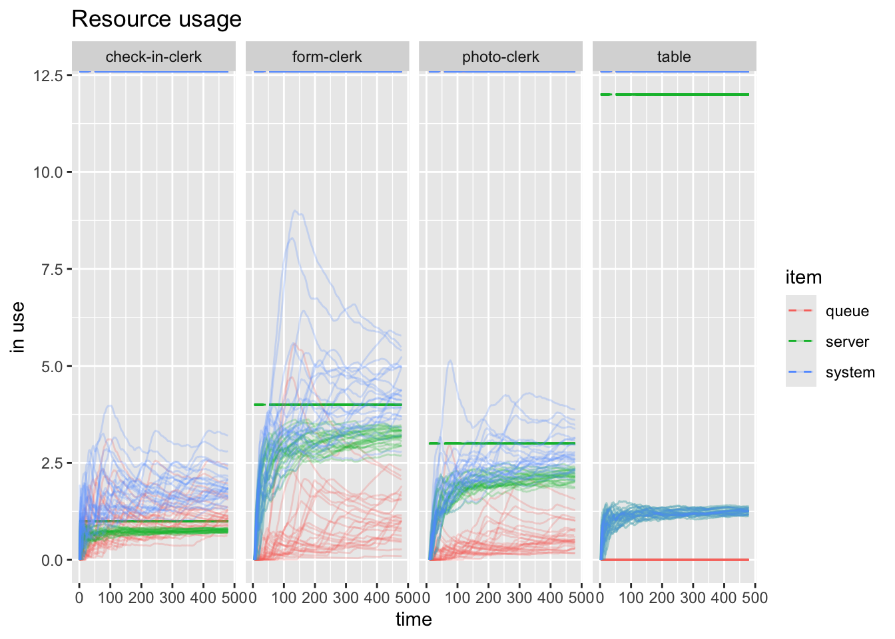
plt <- plot(resources_rep, c("check-in-clerk", "form-clerk"), metric = "usage", items="server")
ggsave("replicated-resources.png", plt)Saving 7 x 5 in imageUtilization
plot(resources_rep, metric = "utilization")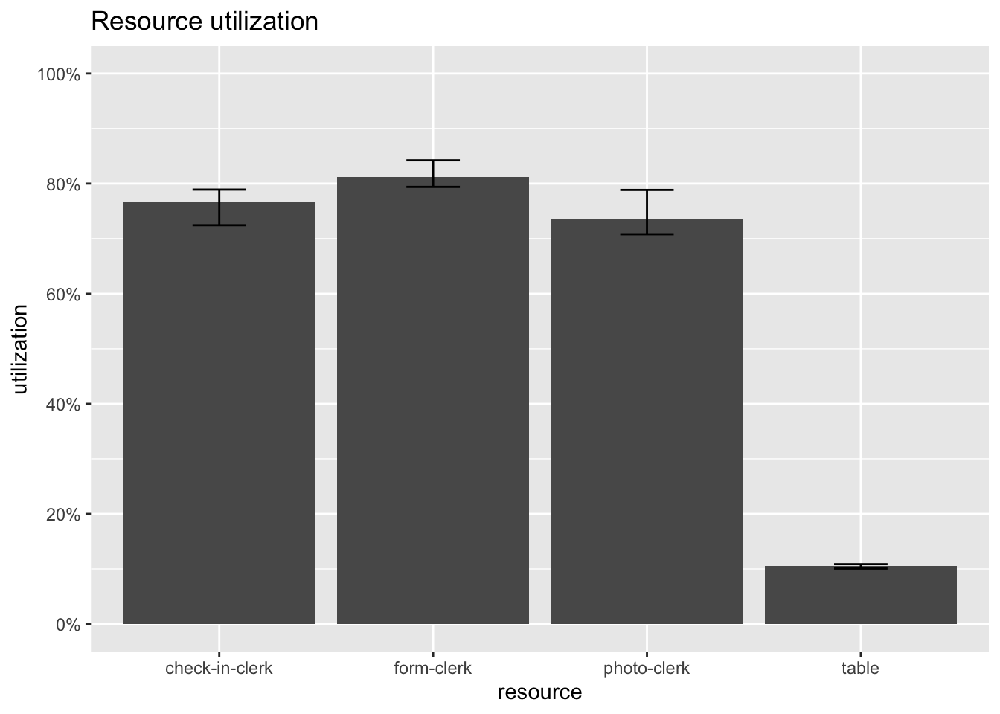
5 Conclusion
- With utilization being fairly high for the clerks, it could be difficult to improve the process
- Clearly there are more tables than needed, maybe there a few should be removed and more chairs should be added for those waiting
- We could play around with the clerks by shifting some of the photo clerks to the form clerks, but that could require additional training
- We may not be able to shift form clerks to photo-clerks due to a constraint on the number of photo stations that exist.
5.1 Further Development
- Considered a single customer trajectory through the system
- People go to the MVC for many other things as well
- Could model each customer trajectory
- Could aggregate all the different customers into a single distribution
- Could model lunch rotation and breaks